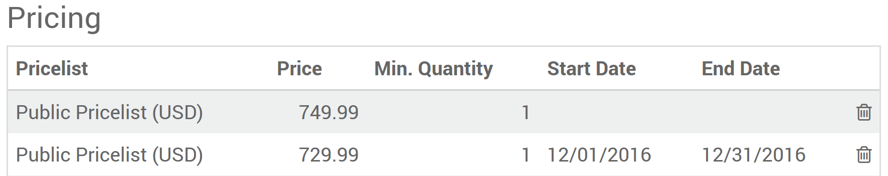
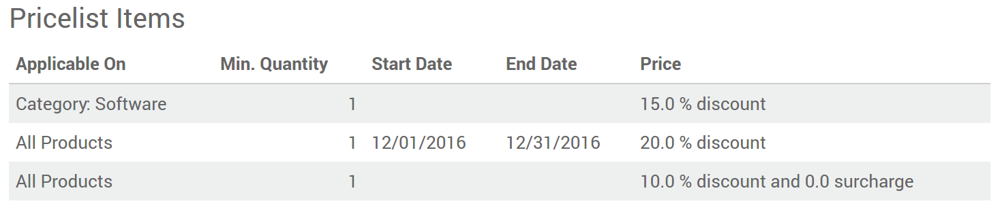
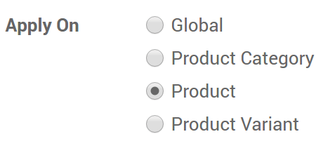
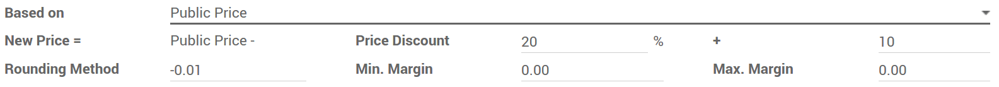

У Odoo есть мощная прейскурантная функция для поддержки стратегии ценообразования, адаптированной к вашему бизнесу. Прейскурант - это список цен или ценовых правил, которые Odoo ищет для определения предлагаемой цены. Вы можете установить несколько критериев для использования определенной цены: периоды, мин,. проданное количество (соответствует минимальному количеству заказа и получает ценовой разрыв) и т. д. Поскольку прайслисты предлагают только цены, они могут быть отменены пользователями, заполняющими заказы клиентов. Выберите свою стратегию ценообразования: menuselection: [UNKNOWN NODE title_reference].

Несколько цен за продукт
Чтобы применить несколько цен на продукт, выберите * Разные цены для сегмента клиента * в: menuselection: [UNKNOWN NODE title_reference]. Затем откройте вкладку * Продажи * в форме подробного описания продукта. Вы можете решить следующие стратегии.
Цены согласно сегменту клиента
Создайте прейскуранты для своих сегментов: например, зарегистрированные, премиальные и т. д.

Прейскурант по умолчанию, применяемый к любому новому клиенту, является * Public Pricelist (общественный) [UNKNOWN NODE problematic]. Чтобы сегментировать своих клиентов, откройте форму детали клиента и измените * Прейскурант распродажи * на вкладке * Продажи и покупки [UNKNOWN NODE problematic].

Временные цены
Применить сделки для банковских праздников и т. д. Введите даты начала и даты окончания.
Совет
Убедитесь, что в прейскуранте установлены цены по умолчанию за пределами периода сделок. В противном случае у вас могут возникнуть проблемы после периода.
Цены за минимальное количество

Примечание
Заказ цен не имеет значения. Система является интеллектуальной и применяет первые цены, которые соответствуют дате заказа и / или минимальным количествам.
Скидки, поля, округления
Третий вариант позволяет устанавливать правила изменения цен. Изменения могут относиться к цене на список продуктов / каталогов, себестоимости продукта или к другому прейскуранту. Изменения рассчитываются с помощью скидок или надбавок и могут быть вынуждены укладываться в пол (минимальная маржа) и потолки (максимальная маржа). Цены могут быть округлены до ближайшего цента / доллара или нескольких (или ближайших 5 центов, ближайших 10 долларов).
После установки перейдите в: menuselection: «Sales -> Configuration -> Pricelists` (или: menuselection:« Адреса веб-сайта -> Каталог -> Прейскуранты », если вы используете электронную коммерцию).
Каждый прейскурант может быть связан либо с любыми продуктами, либо с внутренней категорией продукта (набором продуктов), либо с конкретным продуктом. Как и во втором варианте, вы можете установить даты и минимальные количества.
Примечание
И снова система умна. Если для определенного элемента установлено правило, а другое для его категории, Odoo примет правило элемента.
Убедитесь, что хотя бы один элемент списка цен распространяется на все ваши продукты.
Существует 3 способа вычисления: фиксировать цену, скидку и формулу.

Здесь возможны различные ценовые настройки благодаря формулам.
Скидки с округлением
Например, скидки 20% с ценами, округленными до 9.99.
Затраты с надбавками (розничная торговля)
Например, цена продажи = 2 * стоимость (100% разметка) с минимальной маржой в 5 долларов.

Цены на страну
Прейскуранты могут быть заданы по группам стран. Любой новый клиент, зарегистрированный в Odoo, получает прейскурант по умолчанию, то есть первый в списке, соответствующем стране. Если для клиента нет страны, Odoo берет первый прейскурант без какой-либо группы стран.
Прейскурант по умолчанию можно заменить при создании заказа клиента.
Совет
Вы можете изменить последовательность прайс-листов, перетащив их в виде списка.
Вычислить и показать скидку% клиентам
В случае скидки вы можете указать общедоступную цену и вычисленную скидку% на печатные заказы на продажу и в свой каталог электронной коммерции. Для этого:
Проверить * Разрешить скидки по строкам заказа клиента * в: menuselection: [UNKNOWN NODE title_reference].
Примените эту опцию в форме настройки прейскуранта.

См.также
: Документ: [UNKNOWN NODE title_reference]
: Документ: [UNKNOWN NODE title_reference]